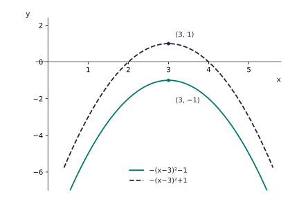

Combined transformations
Read the equation from the inside out. The order of transformations changes the final graph.
Single transformations first
- y=f(x)+a: translate by (0,a).
- y=f(x+a): translate by (−a,0).
- y=a f(x): stretch parallel to the y-axis, scale factor |a|; if a<0, also reflect in the x-axis.
- y=f(ax): stretch parallel to the x-axis, scale factor 1/|a|; if a<0, also reflect in the y-axis.
Describe every transformation with its type, direction and magnitude. A combined equation is safest when read inside to outside.
Why order matters
Start with y=x². Reflect in the x-axis, then translate by (3,−1):
- y=−x².
- y=−(x−3)²−1, vertex (3,−1).
Reverse the order and the result is y=−(x−3)²+1, vertex (3,1).

Read y=a f(b(x+p))+q
- a: vertical stretch scale factor |a|; if a<0, also reflect in the x-axis.
- b: horizontal stretch scale factor 1/|b|; if b<0, also reflect in the y-axis. Require a,b≠0.
- p: horizontal translation by (−p,0).
- q: vertical translation by (0,q).
A stationary point has a horizontal tangent, so its derivative is zero; it can be a local maximum, local minimum or flat inflection. A reliable inside-to-outside order is horizontal stretch, horizontal translation, vertical stretch/reflection, then vertical translation. Skip identity pieces: a=1,b=1,p=0,q=0.
Two quick read-offs
y=1+f(x/2): horizontal stretch factor 2, then translation (0,1).
y=3−f(x): reflection in x-axis, then translation (0,3).
For y=f(2x+6), what is the horizontal scale factor?
Four steps
- Match the equation to y=a f(b(x+p))+q.
- Read off a,b,p,q; missing constants are identities.
- List each non-trivial transformation with type, direction and magnitude.
- State them inside-out unless the question fixes another order.
Worked example: y=f(2x)−3
- a=1,b=2,p=0,q=−3.
- Inside: horizontal stretch, factor 1/2.
- Outside: translation by (0,−3).
Worked example: y=3−f(x)
- Rewrite as y=(−1)f(x)+3.
- First reflect in the x-axis.
- Then translate by (0,3). Translating first would give −f(x)−3, so order matters.
Worked example: two given quadratics
From f(x)=x² to g(x)=2x²−8x+14:
- Complete the square: g=2(x−2)²+6.
- Translate by (2,0).
- Stretch parallel to y-axis, factor 2.
- Translate by (0,6).
For f=x²−4x+9=(x−2)²+5 and g=2x²+4x+12=2(x+1)²+10, g(x)=2f(x+3): translate (−3,0), then stretch y-axis factor 2.
Inside first, outside second
- Inside multiplier b controls horizontal scale 1/|b|; a negative b also reflects in the y-axis.
- Inside bracket x+p shifts by −p.
- Outside multiplier a controls vertical scale |a|; a negative a also reflects in the x-axis.
- Outside +q shifts vertically by q.
- For a point, solve the inside expression equal to the original x-coordinate, then transform its y-coordinate.
Apply, map points, and check order
Apply reflection then translation
From y=x², reflect in x-axis then translate by (3,−1): y=−x²→y=−(x−3)²−1.
Apply two transformations to an equation
y=x²−8x+5=(x−4)²−11. Stretch y-axis factor 2: y=2x²−16x+10. Translate by (4,1): replace x by x−4, add 1, giving y=2x²−32x+107, minimum (8,−21).
Map a stationary point
If (p,q) maps under y=−3f((x+8)/4), solve (x+8)/4=p: x=4p−8; then y=−3q. Image: (4p−8,−3q).
Try 1
y=1+f(x/2): stretch x-axis factor 2, then translate (0,1).
Try 2
y=3f(x−4): translate (4,0), then stretch y-axis factor 3.
Try 3
f=x², g=3(x+2)²−5: translate (−2,0), stretch y-axis factor 3, translate (0,−5).
Try 4
A stationary point (2,−5) under y=4−2f(x+3): x+3=2 gives x=−1; y=−2(−5)+4=14. Image (−1,14).
Exam-style examples
y=5−f(x): reflect in x-axis, then translate (0,5).
y=x²−6x+4, stretch y-axis factor 2 then translate (−1,3): 2(x+1)²−12(x+1)+11=2x²−8x+1.
For a stationary point (p,q) under y=3f((x−6)/2)+1: solve (x−6)/2=p, giving (2p+6,3q+1).
The point (2,4) lies on y=f(x). Where does it map on y=3f(x−2)+5?
Describe, then verify
Match the form, list transformations inside-out, and test a known point or vertex when possible. A graph equation is a sequence of precise operations.